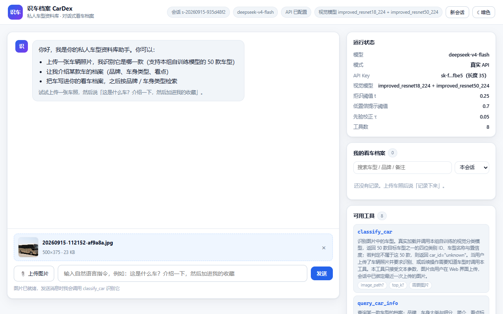
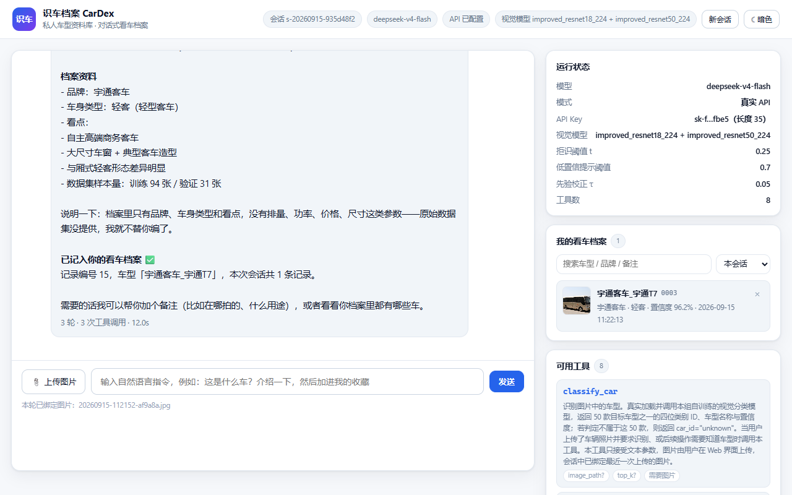
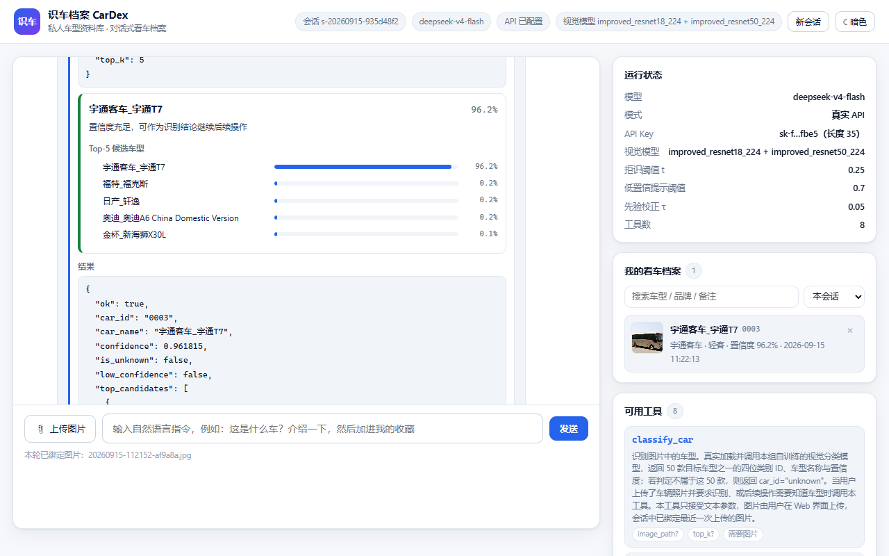
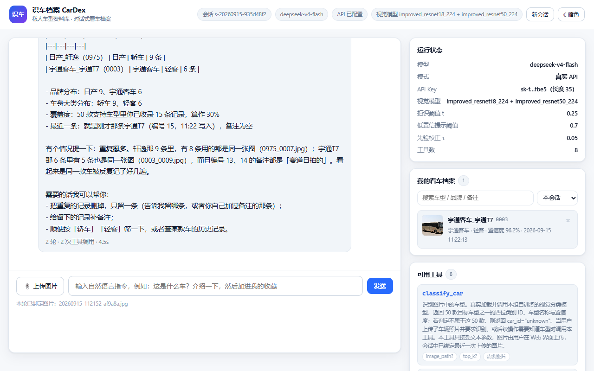
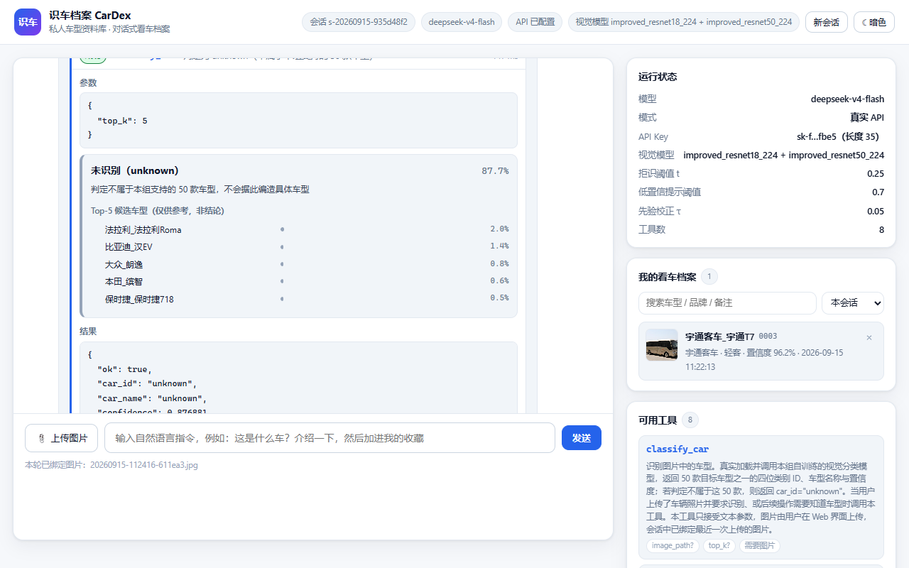
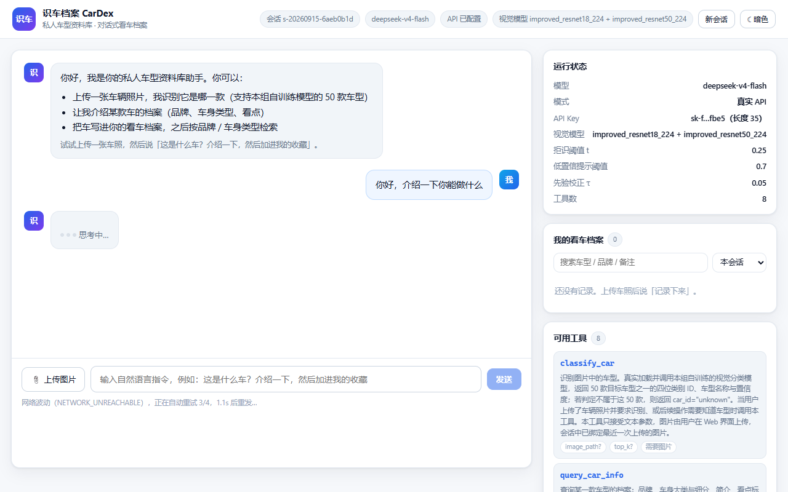
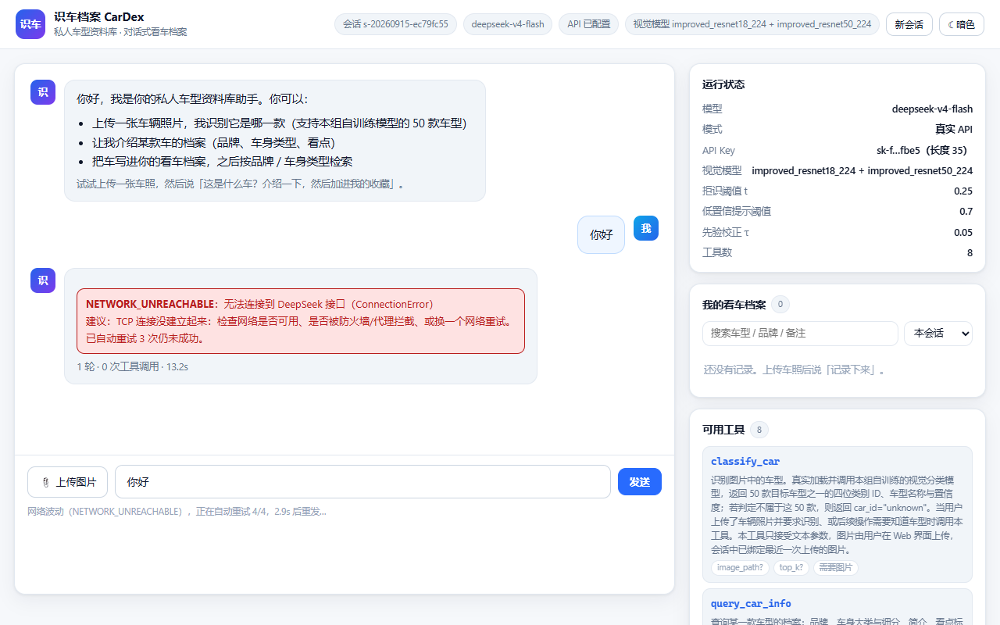

10 · 真实 API 与端到端测试报告
本文记录 接入真实 DeepSeek API 之后的全链路测试：环境自检 → 工具层 → 模型层 → Web 端到端 → 异常路径。 所有结论都来自本机实测，命令可原样复现。
合规声明：本报告、本文档、以及仓库中任何
.py / .md / .html / 截图均不含真实 API Key。 Key 只存在于两个地方：环境变量DEEPSEEK_API_KEY，或agent/.env.local（已被.gitignore忽略，不随作业提交）。 文档与界面中一律显示掩码，形如sk-f…fbe5（长度 35）。
1. 结论摘要
| 测试层 | 脚本 | 结果 | 说明 |
|---|---|---|---|
| L0 环境自检 | tools/selfcheck.py --all |
37 / 37 通过 | 依赖、交付文件、模型权重、API 连通性、真实视觉推理 |
| L1 工具层 | tools/e2e_test.py --stage A |
20 / 20 通过 | 不走模型，逐个验证参数校验 / 门禁 / 错误码 / 拒识分支 |
| L2 模型层 | tools/e2e_test.py --stage B |
33 / 33 通过 | 真实 DeepSeek API，8 个对话场景、共 13 轮 |
| L3 Web 端到端 | 浏览器实测 | 通过 | 上传 → 对话 → 三工具链 → 档案落库 → 拒识，含截图 |
| L4 提交前自查 | src/verify_submission.py |
41 / 41 通过 | 任务一交付物合规 |
| L4 提交前自查 | tools/verify_agent.py |
59 / 59 通过 | 任务书第五、六节逐条 |
合计 190 项检查全部通过，并且在测试过程中发现并修复了 5 个真实代码缺陷 + 4 个工程环境坑（见第 8 节）—— 这正是"接入真实 Key 之后再跑一遍"的价值：离线替身跑通不代表真实链路没问题。 其中第 8 个缺陷（瞬时网络故障直接判死）是实机使用中真实触发后排查修掉的， 第 9 个（超长工具结果截断成非法 JSON）是回归时间歇性失败顺藤摸瓜挖出来的—— 数据越用越多才会踩到，属于"上线一段时间后必然爆发"的那类缺陷。
2. 测试环境
| 项目 | 实测值 |
|---|---|
| 操作系统 | Windows（C:\WINDOWS，内核 26100） |
| Shell | Windows PowerShell 5.1（Desktop 版；本机未安装 PowerShell 7，脚本已按 5.1 兼容编写） |
| Python | 3.13.5（Anaconda，C:\ProgramData\anaconda3\python.exe） |
| PyTorch | 2.13.0+cpu（CUDA 不可用，全程 CPU 推理） |
| torchvision | 0.28.0 |
| Flask / requests / Pillow / NumPy | 3.1.0 / 2.32.3 / 11.1.0 / 2.1.3 |
| 推理线程 | 8（PyTorch 默认） |
| 接口 | https://api.deepseek.com/chat/completions |
| 模型名 | deepseek-v4-flash（任务书规定，代码中为常量 MODEL_NAME） |
| 视觉模型 | improved_resnet18_224 + improved_resnet50_224 集成，TTA 水平翻转，τ=0.05，t=0.25 |
| 端口 | 5000 |
2.1 关于接口返回的一个实测发现
deepseek-v4-flash 在本机表现为带思维链的模型：响应里除 message.content 外还有 message.reasoning_content，
且 usage.completion_tokens 包含思维链 token。实测一次"只回复两个字"的请求消耗 133~218 token。
对本项目的影响：
agent/llm.py只取message.content与message.tool_calls，多出来的reasoning_content被自然忽略，无需改动；- 但
max_tokens: 2048是总预算，思维链会占用一部分。若把max_tokens调到很小（如 20）， 会出现finish_reason=length且content为空——本项目已把这种情况翻译成明确的错误码API_RESPONSE_INVALID「输出被 max_tokens 截断」，而不是让空回复静默通过。
3. 一键启动
3.1 交付的启动文件
| 文件 | 作用 |
|---|---|
start.bat |
双击入口。自动挑 PowerShell（pwsh → Program Files\PowerShell\7 → WindowsApps → 系统自带 5.1），转调 start.ps1 |
start.ps1 |
真正的启动脚本：找 Python → 确认 Key → 环境自检 → 起服务 |
tools/selfcheck.py |
启动前的环境自检，也可单独运行 |
start.ps1必须以 UTF-8 with BOM 保存。Windows PowerShell 5.1 读取无 BOM 的.ps1时会按系统 ANSI（本机 GBK）解码， 中文字符串会变成乱码并直接导致语法错误。这是实测踩到的坑，见第 8 节 BUG-4。
3.2 启动流程
双击 start.bat
│
├─ 1. 找 Python：.venv → Anaconda → PATH，并优先选「已装 torch+flask」的那个
├─ 2. 确认 API Key：环境变量 DEEPSEEK_API_KEY ＞ agent/.env.local
│ 都没有 → 当场提示粘贴一次，写进 agent/.env.local（已 gitignore）
│ 直接回车 → 离线替身模式（页面顶部会有醒目提示）
├─ 3. 环境自检：依赖 / 交付文件 / 权重 / 工具装配，有 FAIL 就中止并给出修复建议
│ -DeepCheck 额外做「真实 API 调用 + 真实视觉推理」两项实测
├─ 4. 选端口：5000 被占用则自动顺延到 5001…（最多试 20 个）
└─ 5. 拉起 web/app.py，打印访问地址，并延迟 3 秒自动打开浏览器
3.3 参数
| 参数 | 默认 | 说明 |
|---|---|---|
-Mode web\|cli\|check |
web |
启动 Web 系统 / 命令行智能体 / 只自检 |
-Port <n> |
5000 |
Web 端口，被占用自动顺延 |
-BindHost <ip> |
127.0.0.1 |
只监听本机；要局域网访问可传 0.0.0.0 |
-Offline |
关 | 强制离线替身（即使已配 Key） |
-DeepCheck |
关 | 自检时额外跑真实 API 与真实视觉推理 |
-NoCheck |
关 | 跳过自检，直接启动 |
-NoBrowser |
关 | 不自动开浏览器 |
-Install |
关 | 启动前执行 pip install -r requirements.txt |
-Image <路径> |
— | cli 模式：先绑定一张图片 |
-Question <文本> |
— | cli 模式：只问一次就退出 |
常用组合：
.\start.ps1 # 起 Web（最常用，等价于双击 start.bat）
.\start.ps1 -Mode check -DeepCheck # 只做全量自检（含真实 API + 视觉推理实测）
.\start.ps1 -Mode cli # 命令行对话调试
.\start.ps1 -Port 8000 -NoBrowser # 换端口、不开浏览器
.\start.ps1 -Install # 缺依赖时先装依赖
.\start.ps1 -Offline # 无网/无 Key 时演示（页面会标注「离线替身」）
4. L0 —— 环境自检（tools/selfcheck.py）
python tools/selfcheck.py # 快检（不联网）
python tools/selfcheck.py --api # 加做真实 API 连通性
python tools/selfcheck.py --vision # 加做真实视觉推理
python tools/selfcheck.py --all # 全量
python tools/selfcheck.py --json # JSON 输出（供脚本解析）
实测输出（节选，--all，37 项全过）：
【依赖】 torch 2.13.0 (CUDA 可用: False)、torchvision 0.28.0、flask 3.1.0、
requests 2.32.3、PIL 11.1.0、numpy 2.1.3
【API Key】 来源：agent/.env.local · sk-f…fbe5（长度 35）
密钥文件已在 .gitignore 中 → 不会随作业提交
接口模型名 deepseek-v4-flash
【交付文件】 classes.txt 250 B · predictions.csv 71,844 B
classes.txt 校验通过：50 行 · 4 位数字 · 升序 · 无 BOM · 不含 unknown
predictions.csv 表头正确：2422 行数据
【视觉模型】 improved_resnet18_224/best.pt 42.8 MB + improved_resnet50_224/best.pt 90.4 MB
【运行时】 torch 线程数 8 · 目录可写 · 端口 5000 空闲 · 磁盘剩余 494.5 GB
【智能体装配】 工具 8 个；视觉工具 1 个；非视觉工具 7 个（满足「≥1 + ≥2」）
【API 连通性】 HTTP 200 · 模型 deepseek-flash · 1020 ms · tokens 133 · 回复 '在线'
【视觉推理实测】0003_0009.jpg → 宇通客车_宇通T7 (96.18%, unknown=False) · 170 ms
模型常驻复用：第二次调用 154 ms
selfcheck.py 不只是"跑一下 import"，它把任务书的硬性约束也编成了断言：
classes.txt 的行数/位数/升序/BOM/不含 unknown、predictions.csv 的表头、集成权重是否齐全、工具数量是否达标。
5. L1 —— 工具层（tools/e2e_test.py --stage A）
不经过模型，直接调 ToolRegistry.execute，因此结果确定、毫秒级（总计 6.8 s，其中 6.4 s 是首次加载视觉模型）。
| # | 检查项 | 预期 | 实测 |
|---|---|---|---|
| A1 | 识别支持车型 | 成功 + 具体车型 + Top-5 + 结构化建议 | 宇通客车_宇通T7 96.18%，decision.action=accept |
| A2 | 识别范围外车型 | is_unknown=True + report_unknown |
car_id=unknown，conf=87.69% |
| A3 | 未上传图片就调用 | 前置门禁拒绝 | DENIED_BY_POLICY |
| A4 | 图片路径不存在 | 如实报错 | IMAGE_NOT_FOUND |
| A5 | top_k=999 越界 |
Schema 拦截 | INVALID_ARGUMENTS「$.top_k: 不能大于 10」 |
| A6 | 传多余参数 | additionalProperties:false 拦截 |
INVALID_ARGUMENTS |
| A7 | 参数不是合法 JSON | 解析失败报错 | INVALID_ARGUMENTS |
| A8 | 调用未注册工具 | 报错并列出可用工具 | UNKNOWN_TOOL |
| A9 | 查询范围外车型 0022 |
拒绝，不编造资料 | CAR_NOT_FOUND |
| A10 | 没有识别结果就写档案 | 拒绝 | DEPENDENCY_MISSING |
| A11 | 按车身类型筛选清单 | SUV 恰好 21 款 | 返回 21 款 |
| A12 | 把 unknown 写进档案 | 拒绝（会话状态路径） | UNKNOWN_CAR |
| A12b | 显式传 car_id="unknown" |
拒绝（显式参数路径） | UNKNOWN_CAR |
| A13 | 低置信度分支 | confirm_with_user（把显示阈值临时抬到 1.01 构造） |
命中，指引文本正确 |
| A14 | 工具调用记录落盘 | agent/data/tool_calls.jsonl 存在且字段完整 |
实测 186 行 |
这一层的意义：任务书 5.5「低置信度 / unknown / 异常情况处理」如果只靠大模型自由发挥，
是无法验证的。这里把它下沉成确定性的工具行为——工具结果里直接带 decision.action
（accept / confirm_with_user / report_unknown）和对应的中文指引，模型只要照着走就行。
6. L2 —— 模型层（tools/e2e_test.py --stage B）
真实调用 DeepSeek API，8 个场景、13 轮对话，总计 37.9 秒（33 / 33 全过）。
6.1 场景总表
| 场景 | 用户输入 | 本轮工具 | 轮次 | 耗时 |
|---|---|---|---|---|
| S1 纯文本问候 | 你好，介绍一下你能做什么 | —（0 次） | 1 | 3.4 s |
| S2 上传图后识别 | 这是什么车？ | classify_car → query_car_info |
3 | 10.2 s（含首次加载视觉模型 6.8 s） |
| S3 单轮 3 工具串联 | 识别…查资料…加进收藏 | classify_car → query_car_info → add_car_record |
4 | 5.4 s |
| S4 多轮同会话 | ①这是什么车 ②它是什么品牌/车身类型 ③加进档案，备注"赛道日拍的" | ①2 次 ②0 次 ③add_car_record |
3+1+2 | 3.9+2.2+3.2 s |
| S5 范围外车型 | 这张照片里是什么车？帮我记录一下 | 仅 classify_car（拒识后不写档案） |
2 | 3.3 s |
| S6 无图要求识别 | 帮我识别一下我刚拍的车 | classify_car → 被门禁拒绝 |
2 | 2.5 s |
| S7 档案检索统计 | 我的看车档案里都有什么？按品牌汇总 | my_garage_stats → search_my_records |
2 | 3.7 s |
| S8 范围外提问 | 你能识别奔驰S级和宝马3系吗 | list_supported_cars ×2 |
2 | 2.8 s |
6.2 关键验证点
① 视觉识别确实由模型自己发起（不是外部预先算好塞进提示词）
S2 的事件流里，classify_car 出现在模型的 tool_calls 中：
你 > 我上传了一张车的照片，这是什么车？
↳ classify_car({"top_k": 5})
[OK] classify_car 6825ms 宇通客车_宇通T7 · 0003 · 96.2%
↳ query_car_info({"car_id_or_name": "0003"})
[OK] query_car_info 2ms 宇通客车_宇通T7｜宇通客车｜轻客
这正是任务书 5.1 要考察的点：图片不是"后台先算好、把结论拼进 Prompt"，而是模型在循环里自主决定调用工具， 工具真实加载 checkpoint 并前向推理（首次 6.8 s 是模型加载，之后同图 141~170 ms）。
② 单轮内 ≥3 个工具串联（任务书 5.3 硬性要求）
S3 一轮内完成 classify_car → query_car_info → add_car_record，三个工具全部 ok，
并返回档案记录号（实测 #19），证明写库真的发生了。
③ 多轮会话沿用上文（任务书 5.4）
S4 第 2 轮没有重新上传图片，本轮工具列表为空 []——模型直接沿用会话里第 1 轮的视觉结果作答：
你 > 它是什么品牌、什么车身类型？给我讲讲。
助手 > **品牌：宇通客车**（国产商用车品牌，主要做客车/大巴）
**车身类型：轻客 —— 轻型客车**
第 3 轮说"加进我的档案，备注写赛道日拍的"，模型省略 car_id 直接调 add_car_record，
工具回退到 session.last_prediction，记录写入且 note='赛道日拍的'。
④ 拒识处理（任务书 5.5）
S5 用一张不在 50 类里的图（data/val/unknown/0022_0022.jpg）：
结论：这张照片我认不出来——未识别为本组支持的车型
（模型判定它不属于我能识别的 50 款车，置信度 0.877，属于明确拒识，不是「差一点认出来」）。
...
| 候选 | 相似度 |
| 法拉利 Roma | 0.020 | ← 5 个候选全部列出，且明确标注"不是结论"
| 比亚迪 汉EV | 0.014 |
...
这些分数都很低，等于没有指向性，所以我不给你编一个车型，也不会把它写进档案。
断言全部命中：is_unknown=True、本轮没有调用 add_car_record、回复里明确说明未识别。
⑤ 无图片时的异常反馈（任务书 5.5）
S6 在没有图片的会话里要求识别，模型仍然发起 classify_car 调用，
被注册表的前置门禁拦下（DENIED_BY_POLICY），失败原因如实回传给模型，模型据此转述给用户：
我这边还没收到图片，所以暂时没法识别。麻烦你在界面里上传一张车辆照片，我再帮你认。
拍的时候注意：正侧面或斜前方 45°、车身完整入镜、光线充足……
智能体没有崩，也没有编造一个结果。
6.3 模型自发表现出的"好行为"（未在提示词中要求）
- S7 汇总档案时，模型自己发现"15 条记录只覆盖 2 款车、重复很多"，主动指出
0975_0007.jpg被反复写入，并提议清理重复； - S5 拒识时主动说明"你这张（20260915-112416）和之前那张宇通T7 不是同一张图，所以你档案里那条记录没受影响"；
- S8 被问"能不能识别奔驰S级"时，先查清单再回答，并补充"同品牌的 E 级/5 系外观接近，拍到这两款把握更大"。
7. L3 —— Web 系统端到端（浏览器实测）
用真实浏览器访问 http://127.0.0.1:5000/，走完整交互路径。
7.1 实测步骤
| 步骤 | 操作 | 结果 |
|---|---|---|
| 1 | 打开页面 | 顶栏显示会话号、deepseek-v4-flash、API 已配置、视觉模型两个；右栏"运行状态"显示 t=0.25 / 显示阈值 0.7 / τ=0.05 / 工具数 8 |
| 2 | 上传一张车辆照片 | 预览出现，提示"图片已就绪，发送消息时我会调用 classify_car 识别它" |
| 3 | 发送"这是什么车？介绍一下，然后加进我的收藏" | 3 轮 · 3 次工具调用 · 12.0 s；工具时间线依次出现 classify_car / query_car_info / add_car_record，三张卡片都是"成功" |
| 4 | 查看视觉结果卡片 | 宇通客车_宇通T7 · 96.2% · "置信度充足" · Top-5 候选条形图 |
| 5 | 查看右栏档案面板 | 立即出现 1 条记录：宇通客车_宇通T7 0003 · 宇通客车 · 轻客 · 置信度 96.2% |
| 6 | 再发"我的看车档案里都有什么？" | 同一会话第 2 轮，2 轮 · 2 次工具 · 4.5 s，模型给出品牌分布与覆盖率统计（15 条记录 / 覆盖 30%） |
| 7 | 换一张范围外的车图再问 | classify_car 卡片变为灰色 report_unknown 样式："未识别（unknown）87.7%"，列出 5 个真实候选车型并标注"仅供参考，非结论" |
| 8 | 确认档案面板 | 仍然是 1 条——拒识结果没有被写入档案（符合任务书 5.5） |
截图见 docs/images/（下方直接内嵌）：
1) 上传后页面状态 —— 顶栏显示会话号、模型、API 已配置、两个视觉模型；右栏是运行状态与档案面板。

2) 三工具链完成 —— 3 轮 · 3 次工具调用 · 12.0s，档案面板立即出现 宇通客车_宇通T7 0003 · 轻客 · 置信度 96.2%。

3) 视觉结果卡片（本次新增） —— 车型 + 96.2% + "置信度充足" + Top-5 候选条形图，下方保留原始 JSON。

4) 同一会话第 2 轮 —— 未重新上传图片，模型基于会话状态给出品牌分布与覆盖率统计。

5) 拒识分支 —— 灰色卡片："未识别（unknown）87.7%"，5 个真实候选车型全部标注"仅供参考，非结论"。

7.2 本次顺带做的一处界面改进
classify_car 的工具卡片原先只把结果 JSON 原样铺开（要展开才看得到，且要自己找 top_candidates）。
现在在 JSON 之上增加了一张视觉结果卡片：
- 车型 + 置信度大字；
- 一行结论（
置信度充足/置信度偏低，建议向用户确认/判定不属于本组支持的 50 款车型）； - Top-K 候选的横向条形图；
- 三种分支用不同的左侧色条区分：绿=接受、黄=需确认、灰=拒识。
这让任务书 5.5 要求的"低置信度 / unknown"处理在界面上一眼可见，而不只是藏在模型的行文里。
8. 本次发现并修复的缺陷
接入真实 Key 之前，这些缺陷都被离线替身"掩盖"着——因为替身只走固定分支，既不读
top_candidates， 也不会遇到网络故障。
代码缺陷 5 个：BUG-1（集成丢失 Top-K）、BUG-2（Top-K 混入 unknown）、 BUG-3（骨架自查被真实模型污染）、BUG-8（瞬时网络故障直接判死 + 报错不可读）、 BUG-9（超长工具结果截断成非法 JSON，整轮对话崩掉）。
工程环境坑 4 个：BUG-4（PS 5.1 读无 BOM 的 .ps1 变乱码）、BUG-5（ErrorActionPreference='Stop' 被 stderr 打断）、
BUG-6（PS 5.1 吃掉单引号串里的双引号）、BUG-7（web/app.py 缺 --offline）。
一个共同规律：这 5 个代码缺陷里，4 个都只在"真实使用一段时间、状态变多"之后才会出现 （档案记录累积 → 结果变长 → 触发 BUG-9；网络波动 → 触发 BUG-8；换图片/换会话 → 触发 BUG-1）。 离线替身永远走固定的短路径，所以一个都发现不了。
BUG-1（严重）集成推理丢掉了 Top-K 候选
现象：CarEnsemble.predict_path(path, top_k=5) 收下了 top_k 参数却从未使用，
返回体里没有 top_candidates，导致 classify_car 的 top_candidates 恒为 []。
影响：任务一最终交付的就是 C1+C2 集成，也就是说交付配置下， 任务书 5.5 要求的"低置信度时展示 Top-K 让用户确认"完全没有数据可用。
定位：src/cardex/inference.py —— CarEnsemble.predict_batch() 只返回
label_id / label_name / index / confidence / is_unknown，而 predict_path() 直接透传它的结果。
（单模型 CarClassifier.predict_image() 是返回 top_k 的，所以问题只在集成路径上。）
修复：给 predict_batch() 增加可选参数 top_k，对校正后的集成概率排序并附上候选列表；
predict_path() 透传。因为参数可选，src/finalize.py、src/evaluate.py 等既有调用行为完全不变
（predictions.csv 与 0.9604 的 Macro-F1 不受影响）。
验证：A1b 由 FAIL 转 PASS，S5 场景下模型能列出 5 个真实候选。
BUG-2 Top-K 里混进了 unknown 这一行
现象：修复 BUG-1 后，候选列表第 1 名是 unknown（因为它的概率最高，如 87.7%）。
影响：unknown 不是"候选车型"，它是"以上都不是"这个结论本身。
把它列进"最相似的几款车"，语义上是错的。
修复：agent/tools/vision.py 向分类器多要一个候选（top_k + 1），
过滤掉 car_id == "unknown" 后再截取 top_k，保证返回给模型的永远是 K 个真实车型。
BUG-3（测试可信度）verify_agent.py 在有 Key 时会静默切换成真实模型
现象：接入 Key 后重跑 tools/verify_agent.py，由 59/59 变成 57/59。
根因：该脚本调用 load_config()，而 load_config 在"有 Key"时会自动选 DeepSeekClient。
于是这套本该可复现的骨架自查，悄悄变成了"真实模型行为测试"，
两条依赖具体措辞/固定工具序列的断言随之失败。
修复：verify_agent.py 默认强制 cfg.offline = True（并在输出里打印当前模式），
新增 --live 才切到真实模型；同时把两条断言改得更严谨——
"回复说明了未识别"改为接受同义表述，多轮写档案那条在 --live 下如实降级为 WARN 并说明原因。
分工因此更清晰：
| 脚本 | 管什么 | 是否可复现 |
|---|---|---|
tools/verify_agent.py |
智能体骨架（工具注册、门禁、会话、错误码、Web 路由） | 是（离线替身） |
tools/e2e_test.py |
真实模型行为（工具链、多轮、拒识话术） | 否（模型有随机性，但 13 轮全部符合预期） |
BUG-4（工程环境）PowerShell 5.1 会把无 BOM 的 .ps1 读成乱码
现象：start.ps1 报一堆语法错误，报错里中文全是 鐪熷疄 这样的乱码。
根因：Windows PowerShell 5.1 对没有 BOM 的 .ps1 按系统 ANSI 代码页（本机 GBK）解码。
文件是 UTF-8，于是每个中文字符串都变成了乱码，连引号配对都被破坏。
修复：start.ps1 以 UTF-8 with BOM 保存（start.bat 内容全为 ASCII，不受影响）。
BUG-5（工程环境）$ErrorActionPreference='Stop' 会被 Python 的 stderr 打断
现象：启动脚本在 python -c ... 之后直接终止。
根因：PowerShell 5.1 把外部程序写到 stderr 的每一行都包装成 NativeCommandError 错误记录，
在 Stop 语义下会变成终止性错误。
修复：脚本统一用 Continue，关键步骤显式判断 $LASTEXITCODE / 显式 -ErrorAction Stop，
并在代码里写明了原因，避免后人"顺手改回去"。
BUG-6（工程环境）PS 5.1 传参给外部程序会吃掉单引号串里的双引号
现象：python -c 'import sys;print("%d.%d.%d"%sys.version_info[:3])' 送到 Python 变成
print(%d.%d.%d%sys.version_info[:3])，报 SyntaxError（实测复现）。
根因：PS 5.1 在拼装外部程序命令行时对参数重新加引号，单引号串内部的 " 被吞掉。
修复：传给外部程序的 Python 代码统一写成「PowerShell 双引号 + Python 单引号」。
BUG-8（严重，实机触发）瞬时网络故障直接判死，且报错无法阅读
现象：实机使用中出现
API_REQUEST_FAILED：调用 DeepSeek 接口失败：ConnectionError: HTTPSConnectionPool(
host='api.deepseek.com', port=443): Max retries exceeded with url: /chat/completions
(Caused by NameResolutionError(...: Failed to resolve 'api.deepseek.com'
([Errno 11001] getaddrinfo failed)))
排查结论：这是一次瞬时 DNS 解析失败，不是配置或代码问题。
复查时 DNS 已恢复（Python getaddrinfo 13 ms、nslookup 正常），
连续 3 次真实 API 调用全部成功（2.0 s / 1.8 s / 2.0 s）。
但它暴露了两个真实缺陷：
- 零重试。DNS 抖动通常一两秒就自愈，而项目是"一次失败 = 整轮失败"—— 用户得把自己刚打的那句话重新打一遍。对比主流 agent harness，网络类瞬时故障都会退避重试。
- 报错不可读。把 urllib3 的异常字符串原样抛出，用户看到的是
HTTPSConnectionPool、Max retries exceeded、NameResolutionError这一串——既看不出坏在哪一层，也看不出该怎么办。
修复：把"发请求"和"重试策略"拆开（agent/llm.py）：
- 新增
classify_request_error()：按网络栈自下而上分层判定，翻译成带修复建议的错误码 ——
| 错误码 | 触发条件 | 是否重试 |
|---|---|---|
NETWORK_DNS_FAILED |
NameResolutionError / getaddrinfo failed / [Errno 11001] |
✅ |
NETWORK_UNREACHABLE |
其他连接失败、代理失败 | ✅ |
NETWORK_TLS_FAILED |
SSLError / 证书校验失败 |
❌（配置问题，重试无意义） |
API_TIMEOUT |
连接或读取超时 | ✅ |
API_RATE_LIMITED / API_SERVER_ERROR |
HTTP 429 / 5xx | ✅ |
API_REQUEST_FAILED |
HTTP 400 / 401 / 402 / 403 | ❌（快速失败，附明确建议） |
complete()只在retryable时做指数退避 + ±25% 抖动重试 （默认max_retries=3、retry_backoff=0.8→ 约 0.8 s / 1.6 s / 3.2 s）；- 重试过程通过
notify回调广播api_retry/api_recovered事件， Web 前端实时显示"网络波动（NETWORK_DNS_FAILED），正在自动重试 2/4，1.6s 后重发…"， 用户知道系统在自救，而不是界面卡死； - 网络类错误失败后，前端把用户刚才那句话放回输入框，直接再点一次发送即可。
实测验证（构造四类故障）：
| 用例 | 构造 | 结果 |
|---|---|---|
| E-A 域名解析失败 | 指向不存在的域名 | NETWORK_DNS_FAILED，retryable=True，实际尝试 3 次，广播 2 次 api_retry，提示指向 DNS 而非代码 |
| E-B 连不上的 IP | 指向非路由地址 10.255.255.1 |
API_TIMEOUT（ConnectTimeout），重试 2 次，4.2 s 后失败 |
| E-C Key 无效 | 假 Key | API_REQUEST_FAILED，retryable=False，0.1 s 快速失败，零重试 |
| E-D 正常调用 | — | retries=0，1.3 s |
| E-E 重试后成功 | 前 2 次强制失败、第 3 次放行 | 第 3 次成功，retries=2，事件序列 api_retry, api_retry, api_recovered |
浏览器端实测：另起一个实例把 api_url 指向 https://127.0.0.1:9（必然连接失败），在真实浏览器里发消息：
- 输入框下方实时显示
网络波动（NETWORK_UNREACHABLE），正在自动重试 3/4，1.1s 后重发…；
- 重试耗尽后给出完整错误卡片——错误码 + 原因 + 建议 + 「已自动重试 3 次仍未成功」，
并且把用户刚打的那句话放回输入框，直接再点一次发送即可；
临时重试提示在收尾时被清除，不会一直挂在界面上。

修复过程中又挖出一个连带缺陷：TurnResult.to_dict() 只带了 error.code 和 error.message，
把 info（含 hint 修复建议）丢掉了。于是 SSE 的 error 事件虽然带了建议，
但随后 result 事件会用 to_dict() 的内容覆盖界面，导致用户最终只看到一句
"无法连接到 DeepSeek 接口"，看不到该怎么处理——正是本次问题的原始症状。
已给 TurnResult 增加 error_info 字段并贯通到前端。
顺带发现：诊断脚本第一版只测解析结果的第一个 IP，报了假 FAIL。
逐个测才发现 api.deepseek.com 的三个 A 记录里
112.48.148.243 稳定不通（连续两次 5 s 超时），另两个 6~8 ms 正常。
已改为逐个 IP 实测并分级报告（全通=OK、部分不通=WARN 并说明不影响使用、全不通=FAIL）。
实测 8 次真实请求延迟 896~1836 ms、零重试——因为该 IP 在解析结果里始终排最后，
请求直接命中可达节点。这条信息现在会出现在 selfcheck.py --net 里。
BUG-9（严重，真实模型下约 1/8 概率触发）超长工具结果被截断成非法 JSON，整轮对话崩掉
发现过程：全量回归时 e2e_test.py 的 S7 场景突然从通过变成
[FAIL] S7 档案汇总轮次成功
[FAIL] S7b 基于真实档案数据给出汇总 0 字
[OK] S7a 调用了档案类工具
特点：工具有明确返回（my_garage_stats 共 33 条记录），但整轮 ok=False、回复 0 字。
而且时好时坏——单跑 4 次挂 1 次，典型的"和输入长度有关"的间歇性缺陷。
定位：加 traceback 直接调 _run_steps 绕开 run_turn 的兜底 try，复现出完整调用栈：
File "agent/loop.py", line 323, in _run_steps
session.add_tool_result(call.id, call.name,
truncate(res.content(), MAX_TOOL_RESULT_CHARS), ...)
File "agent/session.py", line 97, in add_tool_result
"result": json.loads(content) if content and content.lstrip().startswith("{") else content,
json.decoder.JSONDecodeError: Invalid control character at: line 1 column 3001 (char 3000)
根因：两处各自都有问题，凑在一起就炸。
loop.truncate()是纯文本截断：text[:3000] + "\n…（已截断）…\n" + text[-3000:]。 对一个 JSON 字符串这么切，切出来的当然不再是合法 JSON—— 插入的那段说明文字带着裸换行，正好落在某个未闭合的字符串里。session.add_tool_result()看到内容以{开头就无条件json.loads()， 把这个解析失败直接抛了出去。而事件日志里的result字段只是审计/展示用的副本， 它解析失败不应该有能力打断一轮真实对话。
触发条件：工具结果超过 MAX_TOOL_RESULT_CHARS = 6000 字符。
my_garage_stats(scope=all) 在档案积累到 33 条记录时正好越线——数据越多越容易踩。
（本项目档案记录是累积的，所以这是个"用久了必然出现"的缺陷。）
修复（两层）：
- 治本 —— 新增
loop.truncate_tool_result()：结构化裁剪。 先json.loads，再按(字符串上限, 列表保留项数)的档位逐级瘦身 （(2000,50) → (500,20) → (200,8) → (80,3) → (40,1) → (20,0)）， 一装得下就停手，最后重新序列化。保证输出的永远是合法 JSON。 裁剪后在结果里显式加_truncated: true/_original_chars/_notice， 让模型知道"这份数据不完整、需要精确参数就重调"，而不是把残缺数据当成全部事实。 非 JSON 内容（理论上不该有）退回文本截断。truncate()保留但明确标注只用于纯文本。 - 兜底 ——
session._parse_for_log()：解析失败就原样存字符串，绝不外抛。
实测：
| 用例 | 修复前 | 修复后 |
|---|---|---|
6614 字符的 my_garage_stats 结果 |
✗ JSONDecodeError: Invalid control character at char 3000 |
✓ 合法 JSON，4168 字符；保留 ok / total_records / 20 条记录 / 全部品牌 + 裁剪标记 |
| 长度边界 10 / 100 / 1000 / 5999 / 6000 / 6001 / 20000 / 200000 | — | ✓ 全部为合法 JSON，且均未超限 |
| 非 JSON（纯文本 / 空 / 数组） | — | ✓ 不抛异常 |
_parse_for_log 收到非法 JSON |
✗ 抛出 | ✓ 原样返回字符串 |
| 原失败场景压测（3 种问法 × 4 次） | 约 1/8 崩 | 12/12 全部成功，回复 360~1537 字 |
BUG-7 web/app.py 缺少 --offline
现象：start.ps1 -Offline 无处可传，无法在已配置 Key 的机器上强制演示离线模式。
修复：web/app.py 增加 --offline，命中时按需重建模块级的 CONFIG / AGENT。
9. 异常路径测试
单独构造异常，验证错误被如实上报而不是被吞掉或伪装成功：
| 场景 | 构造方式 | 实测结果 |
|---|---|---|
| 无效 API Key | 用 sk-000… 假 Key 直连 |
API_REQUEST_FAILED · HTTP 401 · 提示"API Key 无效或已失效" |
| 模型名不存在 | model='no-such-model-xyz' |
API_REQUEST_FAILED · HTTP 400 · 提示"检查模型名、请求参数与消息顺序" |
| 未配置 Key 时强行走真实客户端 | api_key='' |
API_KEY_MISSING · 并给出配置指引 |
| 未配置 Key 时自动降级 | 临时移走 .env.local |
offline=True，客户端自动变成 ScriptedClient，掩码显示"(未配置)" |
| 图片无法解析 / 超 12 MB | Web 上传接口 | IMAGE_UNREADABLE / FILE_TOO_LARGE（前端也先拦一道） |
| 单条消息超 2000 字 | Web 对话接口 | TOO_LONG |
| 连续 3 次相同失败 | 循环内熔断 | 提前终止，避免模型原地打转耗尽预算 |
10. 复现步骤
cd E:\Hanako\OH-WorkSpace\car-kb-agent
# 0) 确认 Key 已配置（密钥只写 .env.local / 环境变量，绝不进代码与报告）
python tools/selfcheck.py # 看到「API Key 来源：agent/.env.local」即可
# 1) 全量环境自检（依赖 + 交付文件 + 权重 + 真实 API + 真实视觉推理）
python tools/selfcheck.py --all
# 2) 工具层（确定性，约 7 秒）
python tools/e2e_test.py --stage A
# 3) 模型层（真实 API，约 40 秒，13 轮对话）
python tools/e2e_test.py --stage B
# 4) 只跑某一个场景
python tools/e2e_test.py --stage B --only S3,S5
# 5) 离线对照（无 Key / 断网时也能跑，结果不代表模型效果）
python tools/e2e_test.py --offline
# 6) 提交前自查
python src/verify_submission.py # 任务一：41 项
python tools/verify_agent.py # 任务二三：59 项（离线骨架）
python tools/verify_agent.py --live # 任务二三：切真实模型再跑一遍
# 7) 一键启动 Web
.\start.ps1
11. 尚未覆盖 / 已知限制
- 教师测试集未提供：仓库里的
predictions.csv是在本地data/val（2422 张，含 588 张 unknown）上的 演练结果，Macro-F1 = 0.9604。拿到测试目录后执行python src/predict_batch.py --input-dir <dir>重新生成即可，脚本与格式均无需改动。 - 并发未压测：Flask 以
threaded=True运行，Agent 对同一会话加锁、不同会话可并发， 但本次只测了单用户顺序交互。 - 真实模型的措辞不保证逐字一致：L2 的 33 项断言全部是对行为（调了哪些工具、成功与否、 状态是否正确）的检查，只有极少数涉及措辞的断言做了同义放宽。多次运行结果可能个别措辞不同， 但工具链与状态机不变。
reasoning_content未展示：接口返回的思维链被有意忽略，没有写进会话日志， 以免把模型内部推理与业务事实混在一起。- 超时参数按 CPU 环境调过：视觉工具
timeout_s=120，模型read_timeout=90。 换到更慢的机器上首次加载模型可能需要放宽。
12. 结论
接入真实 API 后，任务二、任务三的全部链路——环境 → 工具 → 模型 → Web → 异常—— 均已在真实条件下跑通并通过检查（L0~L4 合计 190 项）。
更重要的是，这次真实链路测试暴露了 5 个仅靠离线自测发现不了的代码缺陷 （最严重的一个会让任务书 5.5 的"低置信度展示 Top-K"在最终交付配置下无数据可用； 另外两个是实机使用中真实触发、导致整轮失败的瞬时网络故障处理， 以及数据累积后必然爆发的超长工具结果截断崩坏），它们都已被修复并纳入回归。
相关文档：05 · 脚本与命令手册 · 03 · 配置参数详解 · 08 · 常见问题与排错 · 09 · 任务二三交接说明